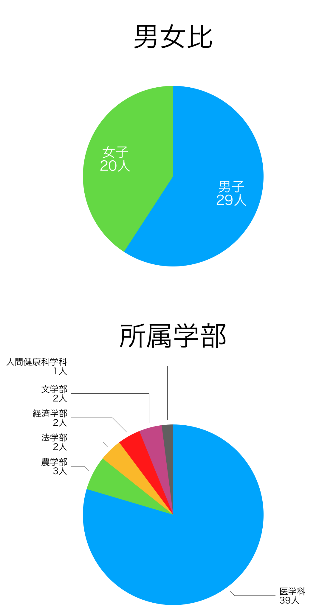

新型コロナウイルスの感染拡大への対応について
新型コロナウイルスの感染拡大により、当部でも一部の新歓行事を中止または縮小することになりました。ご注意下さい。また、実施する一部の行事についても、マスク着用など最大限の対策を講じます。詳細(PDF)
ホーム
発足39周年を迎えた京都大学医学部茶道部のホームページです。主に新入生向けの新歓情報、お茶会情報、OB・OG様向けの情報を発信しております。
当茶道部では、京都大学医学部の学生を中心に肩肘張らない和やかな雰囲気で裏千家流の稽古をしています。 男子部員も多く、また他学部生も歓迎しています。
当部に所属する部員も、大学まではお茶を点てたことがない人がほとんど。それでも練習を行ううちに手順だけでなく、茶を楽しむ「数寄人」の心が身に付きます！
更新情報
- 2020年3月30日
- 新歓についてを更新しました。新型コロナウイルスの感染拡大による影響で、一部の新歓の日程を変更しています。
- 2020年3月3日
- 新歓についてをはじめとした各ページを更新しました。2020年の新歓に向けて情報を加筆・修正していきます！
- 2019年3月14日
- 新歓情報をアップデートしました！
- 2019年3月10日
- サイトを更新しました。2019年の新歓に向けて情報を加筆していきます！
- 2018年3月6日
- サイトを更新しました。2018年の新歓に向けて情報を加筆していきます！
- 2017年3月12日
- サイト上部のロゴを変更しました！
- 2017年2月18日
- 新歓についてを更新しました。
- 2017年2月13日
- 新歓についてを更新しました。
- 2017年2月5日
- 本サイトをリニューアル＆公開しました！
茶道部について
京都大学医学部茶道部とは
京都大学医学部茶道部は、京都大学医学部の学生を中心に裏千家流の稽古をしているクラブです。男女比はほぼ1:1で、また他学部生も歓迎しております。兼部している部員も多く、その他趣味との両立も可能です。
1,2回生では週に1回の練習日を設け、肩肘張らない和やかな雰囲気で茶道を楽しんでいます♪部員のほとんどは茶道未経験者でしたが、先輩の指導のもと上達させたお点前をお茶会で披露しています。お茶会は年に数回開かれ、過去には平安神宮や北野天満宮など全国的な名所で行ったこともあります。
医学部医学科の一学年約110人中10人前後が所属している、医学部で最大級の文化部です！
部の運営について
3回生の4月〜3月が幹部学年となります。1回生〜3回生は"席内"と呼ばれるメインの学年であり、お茶会等のイベントへは原則参加ですが、4回生〜6回生になると"席外"と呼ばれ、イベントへの参加は任意となります。実際は、席外になってもお茶会や合宿等の様々なイベントに参加してくださる先輩が多数です♪
部員構成
2020年4月時点での、新2回生〜新6回生部員の所属学部及び男女比は以下のようになっています。

練習日・練習場所
2020年度の練習日・練習場所は
- 1回生：毎週火曜日17時〜20時 於芝蘭会館別館
- 2回生：毎週水曜日17時〜20時 於医学部学生会館の部室 です。
部費について
イベント時などに大きく徴収するのではなく、毎月定額を部員から徴収しています。詳しくはお問い合わせください。
茶道部の歴史
京都大学医学部茶道部は1982年に発足いたしました。茶会全体のテーマを決め、当時の流行、時勢などを手がかりに濃茶席、薄茶席それぞれのテーマを考えてお茶会を開催してまいりました。
お茶会に因みまして、様々な方々のご厚意からお道具などのご支援を賜っていただきました。現在我々が茶道の道を歩めるのも皆様のおかげてございます。この場所を借りまして御礼申し上げます。